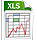

charity
charityGame On
Scoreboard
Check out the scoreboard with all the teams, games and spirit.Game schedule
Here you can downoad the game schedule and players info pack:The game schedule can be downloaded in PDF format. Click here, do it!
 The game schedule in Excel format. Click me please Windows lovers ...!
Here is the Players Info Pack Download.
Event schedule
you will find the Event schedule and Program on the Tournament page.Rules
Windmill Windup tournament will apply the new WFDF 2009 rules.You can find the new rules at the WFDF site. WFDF has produced an Interpretations document to provide some common examples of how to apply the rules.
- Open and Mixed teams will play 8 games (5 in the Swiss Draw, then Quarter, Semi and Final).
- Ladies teams play 8 games, except two will play only 7 games.
- Open, Mixed & Ladies games are to 15 points or 90 minutes – after 85 minutes, the “5 minutes left” jingle will sound. Play out the point, add 1 to the highest score with a maximum of 15 points, and finish the match.
- All games in all divisions on Sunday are to 15 points, no time cap.
- Captains can arrange to move a game to a vacant field should a game on their assigned field be running over time.
- All games have 2 minute mirror half time at 8 points.
- Each team has 2 time-outs per game.
- Ties in the ranking of each round of the Swiss Draw will be broken by 1) point difference, then 2) spirit scores, 3) coin flip
- It is very important that match scores are reported to the TD immediately after each game. Or the whole schedule could be held up. Please make sure you help with this. Captains are ultimately responsible for ensuring that scores are properly reported. Thanks.
- Please make sure you record a spirit score for your opponents on the scoresheet after each game.
Format
Open & Mixed Divisions: Swiss Draw
The Open Division, and this year the new Mixed Division will feature a draw innovation which made its debut at previous windups. You'll taste the delights of the Swiss Draw format which was first devised and used for chess and bridge competitions in Switzerland.
This year we are running on 90 minute timeslots in all divisions. All games are to 15 points, but after 85 mins you will hear our "5 mins left" jingle. So finish the point than add 1 to complete the match. No timeouts in cap.
We are lucky enough to have a sufficient number of fields so that all the teams in the Open division are playing matches simultaneously. The first round match-ups are virtually random in the Open and Mixed divisions. Then…
Please report your scores to Frisbee Central (TD) or any staff member (blue shirts). Each game has its win-loss converted to Victory Points. That is, the difference between scores is converted to Victory Points using the following scale.
Victory Point (VP) Scale
| Margin of Victory | VPs for Winner | VPs for Loser |
|---|---|---|
| 1 | 16 | 14 |
| 2 | 17 | 13 |
| 3 | 18 | 12 |
| 4 | 19 | 11 |
| 5 | 20 | 10 |
| 6 | 21 | 9 |
| 7 | 22 | 8 |
| 8 | 23 | 7 |
| 9 | 24 | 6 |
| 10 | 25 | 5 |
| 11 | 25 | 4 |
| 12 | 25 | 3 |
| 13 | 25 | 2 |
| 14 | 25 | 1 |
| 15 | 25 | 0 |
So the maximum you can get is 25 VPs and the minimum 0.
This is popular because teams nearly always score something and the whole point of the style is that a team, clearly beaten, needs to battle to the finish as it is the margin which matters. Likewise, just winning is not winning much.
The draw for the next round simply consists of ranking the teams by VPs. and resorting to allow that no team plays the same team twice. 1st plays 2nd, 3rd plays 4th etc. etc. A team’s VPs are carried forward throughout the tournament.
Tie-break method for teams that have an equal amount of VPs at the end of any given Round of the Swiss Draw: For – Against (goal difference) for the whole tournament thus far. If teams are still tied, it will go to Spirit scores, and then a random method will be used at the TDs discretion (probably a coin toss or random number or paper-scissors-rock).
Open and Mixed will play 5 rounds of this format to rank the teams. At the end of 5 rounds, the divisions split into 1-8, 9-16, 17-24 & 25-35. These groups will play quarter finals, semi finals and finals to get your final finishing position (the larger lower pool in each division will have a slightly different play-off sequence).
If this explanation is as clear as mud to you, then feel free to email us with questions, or ask us at the tournament. Yeah! Remember, this Swiss Draw is tried and true in many competitive arenas. I have personally seen it work well at Bridge and Touch Football tournaments back home in Australia, as well as last year's Windup.
It is very important that team captains ensure that the TD has their match scores IMMEDIATELY when each game finishes. Otherwise calculating the following round games will be impossible. Please give us all your help with this. If you do not have a scorekeeper at your field, please do it yourself and report your scores to the organisor’s tent.
Thank you!
Women’s Division
There is not a minimum of 18 women's teams, so we will not use the Swiss Draw format in this division.
Game 1 is an initial seeding round, and then teams will go into 3 pools of 4 or 5 teams. 8th place for the quarterfinal PLACINGS will be determined by a wildcard game. Normal quarterfinals will follow for the top 8, and the lower 5 will play a round robin for placings. For more detail, see the Women’s Division Format on the last page of the PDF Players Pack.
Registered teams
Last update June 10th, 2009Deadlines:
Team fee due 1st of April.
Player Fees due 10th of May.
Click here for bank transfer details.
Open teams:
| Open Teams | Country | Payment Status | |
|---|---|---|---|
| 1 | Gentle | Gent, Belgium | Team and Player Fees paid, thanks! |
| 2 | Copenhagen Flying Circus | Copenhagen, Denmark | Team and Player Fees paid, thanks! |
| 3 | Woodies | Munich, Germany | Team and Player Fees paid, thanks! |
| 4 | Me and my friends | France | Team and Player Fees paid, thanks! |
| 5 | Jetset | Leuven, Belgium | Team and Player Fees paid, thanks! |
| 6 | Hardfisch | Hamburg, Germany | Team and Player Fees paid, thanks! |
| 7 | IZNOGOOD | Noisy-le-Sec, France | Team and Player Fees paid, thanks! |
| 8 | Frisbee-Family Pempelfort | Düsseldorf, Germany | Team and Player Fees paid, thanks! |
| 9 | Scunts | Edinburgh, Scotland | Team and Player Fees paid, thanks! |
| 10 | Gummibaerchen | Karlsruhe, Germany | Team and Player Fees paid, thanks! |
| 11 | Crazy Dogs | Stans, Switzerland | Team and Player Fees paid, thanks! |
| 12 | Mental Discorders | Bratislava, Slovakia | Team and Player Fees paid, thanks! |
| 13 | Solebang | Cham, Switzerland | Team and Player Fees paid, thanks! |
| 14 | Silence | Prague, Czech Republic | Team and Player Fees paid, thanks! |
| 15 | Cakes | Amsterdam | Team and Player Fees paid, thanks! |
| 16 | les Frisbeurs | Nantes, France | Team and Player Fees paid, thanks! |
| 17 | Altimejt Warsaw Frisbears | Warsaw, Poland | Team and Player Fees paid, thanks! |
| 18 | UFO | Utrecht, Nederland | Team and Player Fees paid, thanks! |
| 19 | Aye-Aye | Team and Player Fees paid, thanks! | |
| 20 | Ultimate DeLux | Luxembourg | Team and Player Fees paid, thanks! |
| 21 | Ragnarok | Copenhagen, Denmark | Team and Player Fees paid, thanks! |
| 22 | 7 Schwaben | Stuttgart, Germany | Team and Player Fees paid, thanks! |
| 23 | TIM BURTON | Brussels | Team and Player Fees paid, thanks! |
| 24 | Karhukopla | Espoo, Finland | Team and Player Fees paid, thanks! |
| 25 | Wizards | Geneva, Switzerland | Team and Player Fees paid, thanks! |
| 26 | Thebigez | Vienna, Austria | Team and Player Fees paid, thanks! |
| 27 | Johnny Chimpo | Dublin, Ireland | Team and Player Fees paid, thanks! |
| 28 | Flying Bisc | Florence, Italy | Team and Player Fees paid, thanks! |
| 29 | Freespeed | Basel, Switzerland | Team and Player Fees paid, thanks! |
| 30 | FarFlung | Glasgow, Scotland | Team and Player Fees paid, thanks! |
| 31 | wall city berlin | Berlin, Germany | Team and Player Fees paid, thanks! |
| 32 | Veermaster | Hamburg | Team and Player Fees paid, thanks! |
| 33 | UL Ninjas | Limerick, Ireland | Confirmed. Fees coming. |
| 34 | Broccoli Ultimate team | Dublin, Ireland | Confirmed. Fees coming. |
| 35 | Friselis | Versailles, France | Confirmed. Fees coming. |
| Torpedo Phoenix | Dortmund, Germany | Pending... | |
| SUN | Créteil, France | Withdrawn | |
| Ultimate Vibration | Cergy, France | Withdrawn | |
| Bad Skids | Bad Rappenau, Germany | Withdrawn | |
| COTARICA | Italy | Withdrawn |
Women teams:
| Women Teams | Country | Payment Status | |
|---|---|---|---|
| 1 | Primavera | NL | Team and Player Fees paid, thanks! |
| 2 | Deadly Buzz | Ireland | Team and Player Fees paid, thanks! |
| 3 | Yaka Team | France | Team and Player Fees paid, thanks! |
| 4 | Copenhagen | Copenhagen, Denmark | Team and Player Fees paid, thanks! |
| 5 | Viima | Finland | Team and Player Fees paid, thanks! |
| 6 | misscoldisco | Parma, Italy | Team and Player Fees paid, thanks! |
| 7 | Hot Beaches | Prague, Czech Republic | Team and Player Fees paid, thanks! |
| 8 | Frau Rauscher | Frankfurt, Germany | Team and Player Fees paid, thanks! |
| 9 | Jinx | Berlin, Germany | Team and Player Fees paid, thanks! |
| 10 | Miss B | Leuven, Belgium | Team and Player Fees paid, thanks! |
| 11 | Spongebabes Dam Square | Amsterdam | Team and Player Fees paid, thanks! |
| 12 | Freespeed Ladies | Basel, Switzerland | Team and Player Fees paid, thanks! |
| 13 | 100 women | A-G-CH | Team and Player Fees paid, thanks! |
Mixed teams:
| Mixed Teams | Country | Payment Status | |
|---|---|---|---|
| 1 | Frizzly Bears | Aachen, Germany | Team and Player Fees paid, thanks! |
| 2 | Discflyers | Odense, Denmark | Team and Player Fees paid, thanks! |
| 3 | Gronical Dizziness | Groningen, NL | Team and Player Fees paid, thanks! |
| 4 | OUF | Tours, France | Team and Player Fees paid, thanks! |
| 5 | Früh Mix | Cologne, Germany | Team and Player Fees paid, thanks! |
| 6 | Outsiterz | Bratislava, Slovakia | Team and Player Fees paid, thanks! |
| 7 | Wunderteam | Vienna, Austria | Team and Player Fees paid, thanks! |
| 8 | Random Fling | Nottingham, UK | Team and Player Fees paid, thanks! |
| 9 | Thundering Herd | London, UK | Team and Player Fees paid, thanks! |
| 10 | Dinosaurs | Aalborg, Denmark | Team and Player Fees paid, thanks! |
| 11 | Cranberry Snack | Frankfurt, Germany | Team and Player Fees paid, thanks! |
| 12 | Nuts n Berries | Halle, Germany | Team and Player Fees paid, thanks! |
| 13 | Ah Ouh Puc | Paris, France | Team and Player Fees paid, thanks! |
| 14 | Mainzelrenner | Mainz, Germany | Team and Player Fees paid, thanks! |
| 15 | Skultimate | Cork, Ireland | Team and Player Fees paid, thanks! |
| 16 | WAF | Wageningen, Nederland | Team and Player Fees paid, thanks! |
| 17 | Joint Strike Force | Nederland | Team and Player Fees paid, thanks! |
| 18 | Prime Force | The Hague | Fees not paid. |
| Croccali | Italy | Withdrawn |